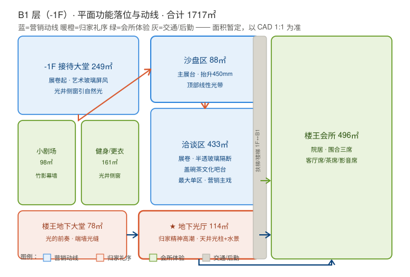
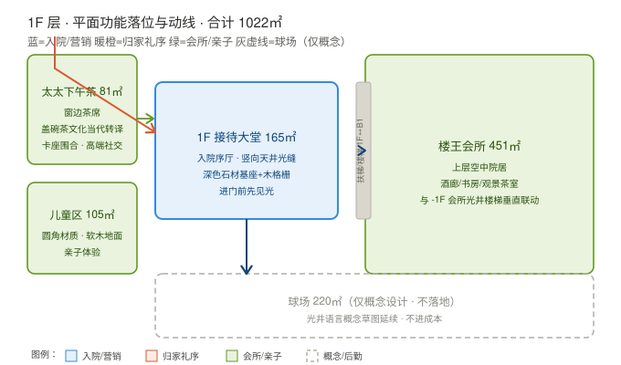
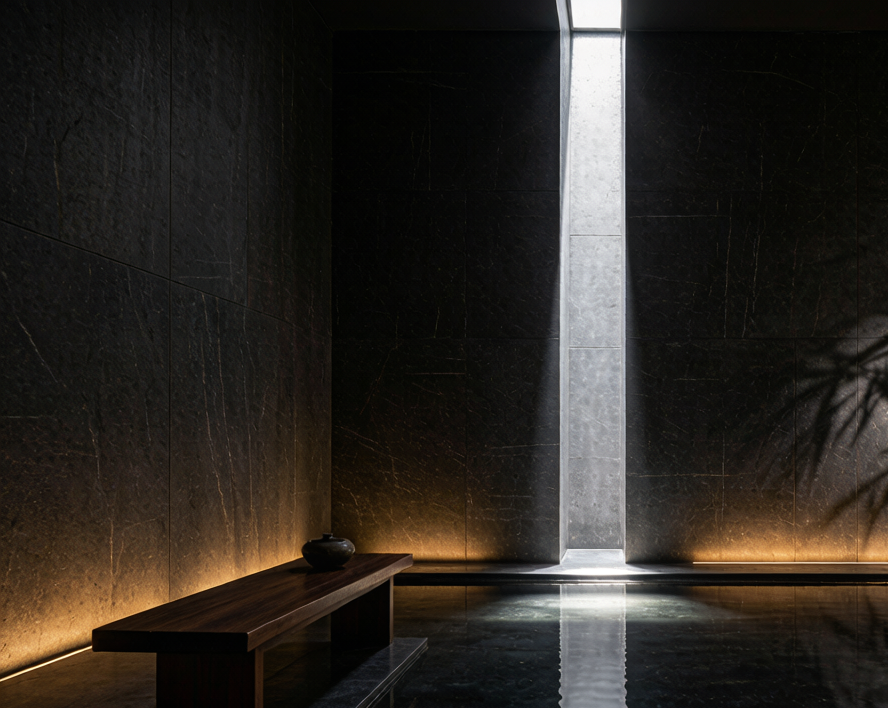
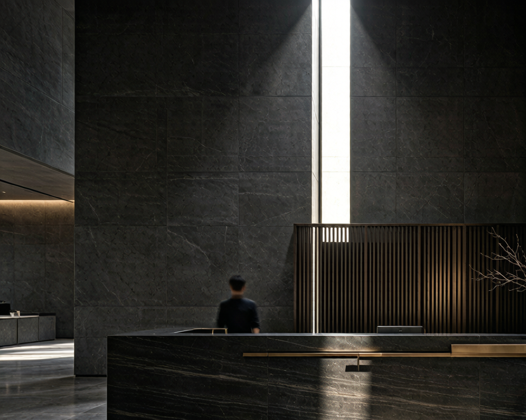

为什么做
商业空间设计公司（营销中心 / 样板间 / 酒店，2000–4000 元/㎡）普遍卡在人效：资深设计师被「方案深化 / 效果图 / 软装清单」这类低判断高重复的活吃掉，单子接不完却不敢接，增长白白漏掉。
第一性原理拆解：稀缺资源是资深设计师的审美判断 + 品控能力，不是画图人力。AI 应该吞掉时间黑洞，把资深还回竞标（赢单）与现场品控（守红线）——而且全程不碰甲方认知，甲方只见设计师手笔。
输入：一份真实任务书（已脱敏）
| 维度 | 内容 |
|---|---|
| 项目类型 | 示范区（营销中心 + 会所 + 地下光厅）室内装饰设计，方案至施工图 |
| 设计面积 / 成本 | 2739㎡ · 硬装限额 6000 元/㎡ |
| 空间清单 | 14 区（接待/沙盘/洽谈/会所/光厅/剧场/健身/儿童/下午茶…） |
| 调性要求 | 现代风格为主 · 视觉冲击力 · 人性化亲和 |
| 阶段 / 罚则 | 概念 12 天 / 方案 20 天 / 施工图 35 天；错漏碰缺超 2% 扣设计费 |
合规处理：甲方主体泛化为「某头部房企（西南区域公司）」、项目村组级地址去除、乙方联系人全部屏蔽——只保留行业通用参数，不指向任何特定主体。
交付链：7 站全链路
竞标框架 → 三套调性 → A 深化包 → 概念阶段 → 12 张概念图 → 施工图阶段 → 两版汇报 PPT + 软硬清单
① 三套对立调性框架
同一真实 brief 出 A 光之下沉·蜀境当代 / B 白盒画廊 / C 都会谧境，供设计总监内部筛，不再只给一套。
② A 方案深化包
14 区平面落位 + 12 张效果图镜头脚本 + 材质灯光 + 软装方向 + 成本初稿（6000/㎡ 分层回红线），一次会话出齐。
③ 概念阶段补齐
平面功能落位（1F/B1 SVG 分区图，面积核对 2739㎡）+ 三类动线分析（营销/归家礼序/后勤，交叉点管控）+ 风格意向。


④ 12 张概念图 + 审美校准
对标真实设计公司图册建立「PPT 呈现风格 + 生图质感」双基准：设计方向由方案定，渲染质感拉到照片级（真实材质纹理 / 克制留白 / 生活温度）。


⑤ 备选方案 C 并行
奢华转化路线（都会谧境·轻奢会所）同步跑通，与 A 构成"在地文化 vs 奢华转化"双打法，评标维度定了再选。
⑥ 施工图阶段（案例展示级）
图纸目录 10 项 + 施工图设计说明（22 项规范落点 + 2% 质控红线）+ 3 个关键节点剖面（光厅天井 / 石材灯槽 / 艺术玻璃隔断）。
⑦ 软硬清单 + 两版汇报 PPT
- 软装 FF&E：223 条（9 大类）+ 12 项漏项预警
- 硬装材料：131 条（13 类，含规格/用量/供应商≥3 家优先本地/封样）+ 12 项管控预警
- 汇报 PPT：概念 10 页 + 深化 13 页，参考真实图册「少字大图、双语标题、整页铺底」版式
方法与工具
第一性原理筛子
知识密度 / 重复劳动 / 中间层冗余 / 反馈慢 / 数据孤岛——商业空间全中，故优先改造。
马斯克五步执行
质疑"AI 必须让客户看见"＝行业惯例，扔掉；删冗余环节给 AI；流程稳了再自动化。
审美/质感双校准
PPT 呈现风格对标真实图册；生图只校质感不改设计方向（照片级渲染）。
可复用工具链
生图引擎、PPT 自动生成管线、FF&E/硬装清单生成器（结构化数据源驱动）。
诚实边界
数字诚实声明：「3 天 → 3 小时 ≈8×」「吞吐 40% → 90%」为流程估算与战略叙事，尚无对照实验数据（需真实设计公司配合做纯人工 vs AI 对照）。AI 概念图为前期调性对齐，最终效果图须走正经渲染管线；清单为 AI 常识初稿，须资深逐条核价。本案例定位＝流程演示 + 可行性验证——端到端跑通是已证实的，提效的量化证据是下一步。
简历 → 本案例证据
| 简历积累 | 本案例证据 |
|---|---|
| 室内设计商务背景（高端别墅工程） | 用行业语言拆需求：任务书 / 成本限额 / 交付链 / 材料封样 |
| AI 端到端构建 | 真实任务书 → 全套交付物全链路自行跑通（含工具链） |
| 设计与体验细节 | 汇报 PPT 版式对齐真实图册；生图审美/质感双校准 |
| 合规意识 | 真实甲方文件脱敏后使用，边界诚实标注（估算不吹实测） |